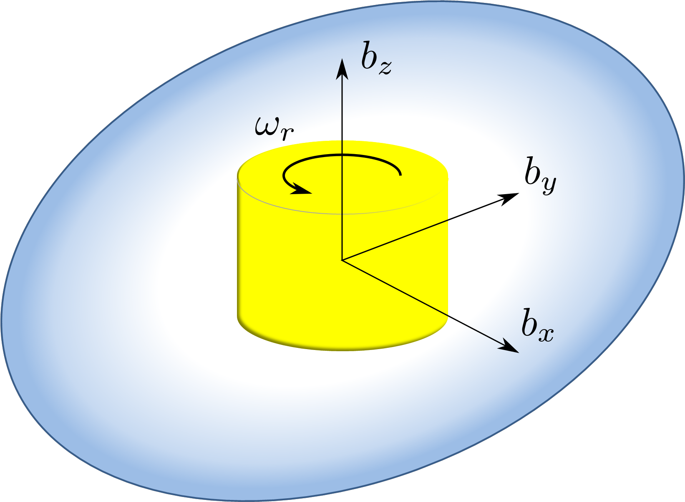

2010年の小惑星探査機はやぶさの例にもあるように，スペースクラフトにおいてはフェールセーフを考えることは重要である． 故障時の最小入力である1ロータを考え，このスペースクラフトは可制御であるかどうか，達成可能な制御目標にはどのようなモノが存在するのかを考えるていく． しかし，1入力であるため，達成可能な制御問題は限られる． そこで，まずは地球との通信を行うことが重要であると考え，アンテナを地球に向けるために姿勢制御問題を考える．
このシステムの可制御性を考えると，システムの慣性主軸とロータの回転軸，システムの初期角運動量ベクトルがすべて一致している場合，スペースクラフトはロータの回転軸周り以外に回転させることができない． そのため，このシステムは可制御性に関して特異点を有している． 既存研究ではスペースクラフトの姿勢制御問題のように状態空間がコンパクトな集合で角運動量保存則の影響を受けるシステムに対して，大域的な可制御性を判定する手法が提案されている．
しかし，1ロータシステムの姿勢制御問題では可制御性に特異点を有しているので，従来の大域的な可制御性の判定手法を用いる事ができない． そこで本論文では，部分集合可制御性という新しい可制御性の概念を導入し，可制御性に特異点を持ち，状態空間がコンパクトなハミルトン系の部分集合における可制御性を判定する定理を与える． これにより，可制御性に特異点を有する系でもほぼ大域的な可制御性を判定できるようになる． この定理により，1ロータシステムは姿勢制御に関して特異点を除いた集合で可制御性を有していることが示せる．
次に，アンテナを地球に向ける制御則を構築していく． このシステムは初期角運動量が3自由度あるにも関わらず，入力数が1つしかないため，姿勢を静止させることはできず，閉ループ系を含めて平衡点が存在しない． そのため，本論文ではアンテナを周期的もしくは断続的でも無限回地球に向けることを考える． 入力が1つであるため，方向を一致させるために入力を用い，周期的な運動は自律的に発生させる必要がある． そこで，アンテナの方向，地球への方向のそれぞれの初期角運動量ベクトルとの相対角を一致させる制御を行う． これにより，アンテナは初期角運動量周りの円錐上に固定され，角運動量によって自然にアンテナの方向ベクトルが円錐上を回転させることができ，制御目標を達成することができる．
- 田原 康平、伊達 央、関口 和真、三平 満司 "Accessibility Rank Conditionに特異点を有する1ロータスペースクラフトの可制御性解析", 第12回SICE制御部門大会, 2012 (japanese)